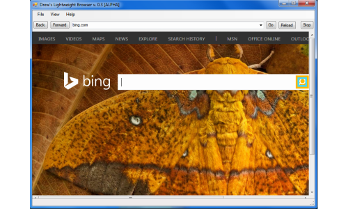

<article class="row">
  <section class="small-12 large-8 page-content">

 
Note that Drew's Lightweight Browser is currently in Alpha and is not recommended for daily use.
<br style="clear:both" />

<br>

  </section>  
</article>